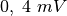
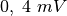

Temperature measurement using PT100
Objective
Record the temperature of a liquid by using a Platinum Resistance
Thermometer. Resistance of a PT100 element is related to the temperature
by the equation  , where
, where
 and
and  .
.


Procedure
- Enter the Gain, Offset error and the Current from CCS
- Select the temperature range and time intervals
- Select the required parameters and press START
Discussion
Cooling curve of water is shown in figure
To measure the resistance of the PT100 element, we connect it from the
CCS to ground and measure the voltage across it. The actual current of
CCS should be measured using an ammeter or by measuring the voltage frop
across an known resistor. The input to A3 is amplified 11 times by
connecting  resistor from Rg to Ground.
resistor from Rg to Ground.
The resistance of PT100 is  at . It changes nearly
at . It changes nearly  , changing the voltage by . The 12 bit ADC output changes
by 1 LSB for
, changing the voltage by . The 12 bit ADC output changes
by 1 LSB for  change in input voltage, hence any temperature
change less than 3 degrees will not be detected. Use an external
non-inverting amplifier to increase the resolution. The gain of the
amplifier should be such that the maximum temperature measured should
give an output less than 3.3 volts. Change the gain field entry
accordingly.
change in input voltage, hence any temperature
change less than 3 degrees will not be detected. Use an external
non-inverting amplifier to increase the resolution. The gain of the
amplifier should be such that the maximum temperature measured should
give an output less than 3.3 volts. Change the gain field entry
accordingly.